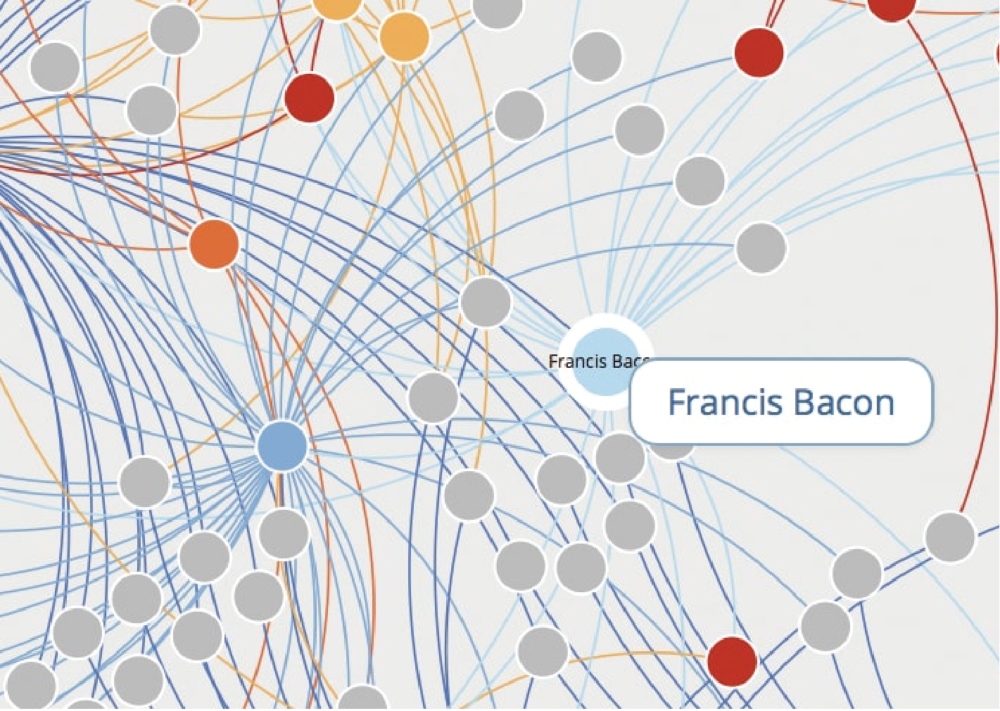

Six Degrees of Francis Bacon
Team
- David Gao
- Max Harlynking
- Amy Li
Opportunity
Crowdsourcing is an essential element to the Six Degrees of Francis Bacon project - supplying the information for the database. Unfortunately, the main problem the project currently faces is the lack of user activity and contribution. Some of the project’s ideal contributors, active academics, lack the time or incentive to contribute to the project’s network. In order to incentivize users, the group hopes to implement interactive features that encourage users to contribute to the website’s network. Once users feel more incentivized to contribute, whether that be through a bar to note their progress or by providing a new way to contribute to the website, Six Degrees of Francis Bacon can grow at a steadier rate and expand its network. This would help the project improve its service, which in turn would help generate more interest and perhaps encourage more contributions to the site.
Outcomes
The project consisted of a three-phased solution. The first phase included implementing a point system and updated user profile page. The point system would help users keep track of their progress, while updating the user profile would help users see how many points they have and encourage community interaction. The second phase was a leaderboard system. The leaderboard would help users compare their contribution progress to other users and further incentivize users to see their name on the main page of the site. The third phase was a new way to contribute to the database that included more interactive features. This phase would be more visually appealing than the old form to invite users to try more interactive ways of contributing. The team also redesigned portions of the home page to focus more on the digital network map to draw new users in. Throughout the process, the team consistently updated the clients on the design process to ensure the new designs were aligned with the project’s mission and existing design. The team also conducted multiple usability testing sessions to gain feedback on the current website’s design and the team’s new design features.
Deliverables
The final deliverable includes a deployed version of all three phases and the additional home page design changes. The code will be accessible to the clients via GitHub.